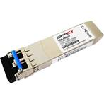

.SFP+(DWDM SFP+ /CWDM SFP+ /BIDI SFP+ SFP+ 6G SFP+ )

* Single LC Connector
* Support hot-pluggable
* Metal with lower EMI
* Excellent ESD protection
* Distance up to 10Km on 9/125um SMF
* RoHS Compliant and Lead-Free
* Operation Temperature：0℃~+70℃
* Single 3.3V power supply and Low power dissipation
<1.5W
* Support 9.95328Gbps and 10.3125Gbps Data Rate.
* 9.5dB Link Power Budget
* Compliant with IEEE 802.3ae 10GBASE-ER and
10GBASE-EW.
* Compliant with SFF-8431SFP+ MSA and SFF-8472
Digital Diagnostic Monitor Function.
Part No. |
Package |
Data Rate |
Tx(nm) |
Pout(dBm) |
Rx |
Sensitivity |
Temp |
Reach |
Other Option |
SFP+ |
10G |
|
0~4 |
|
<-24 |
0~70℃ |
80km |
DDM |
|
SFP+ |
10G |
|
-1~3 |
|
<-16 |
0~70℃ |
40km |
DDM |
|
SFP+ |
10G |
|
-6~0.5 |
|
<-14.4 |
-40℃~85℃ |
10km |
DDM |
|
SFP+ |
10G |
|
-7.3~-1 |
|
<-9.9 |
-5℃~70℃ |
300meters |
DDM |